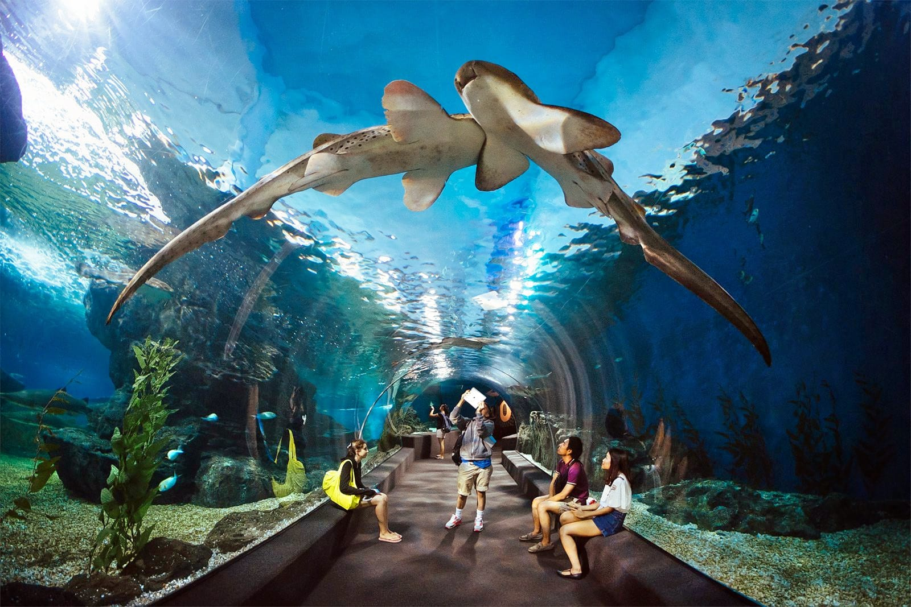
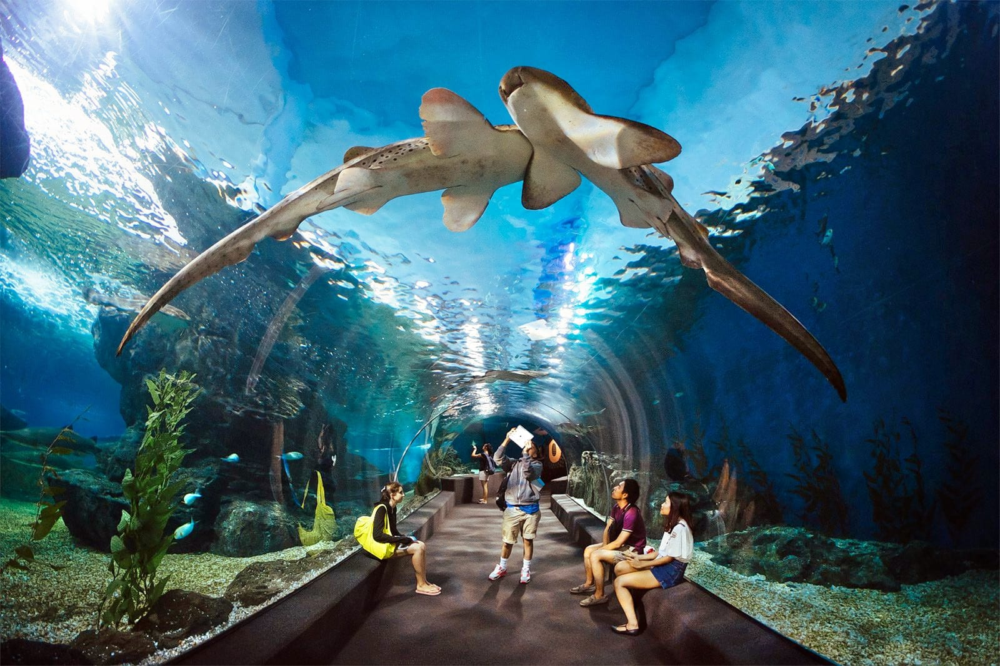
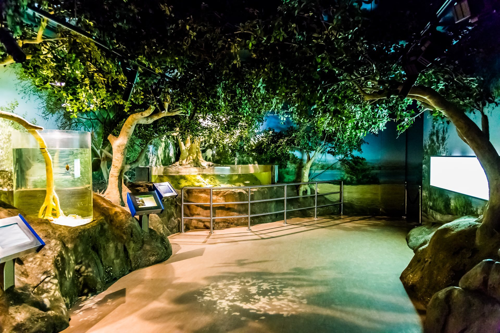
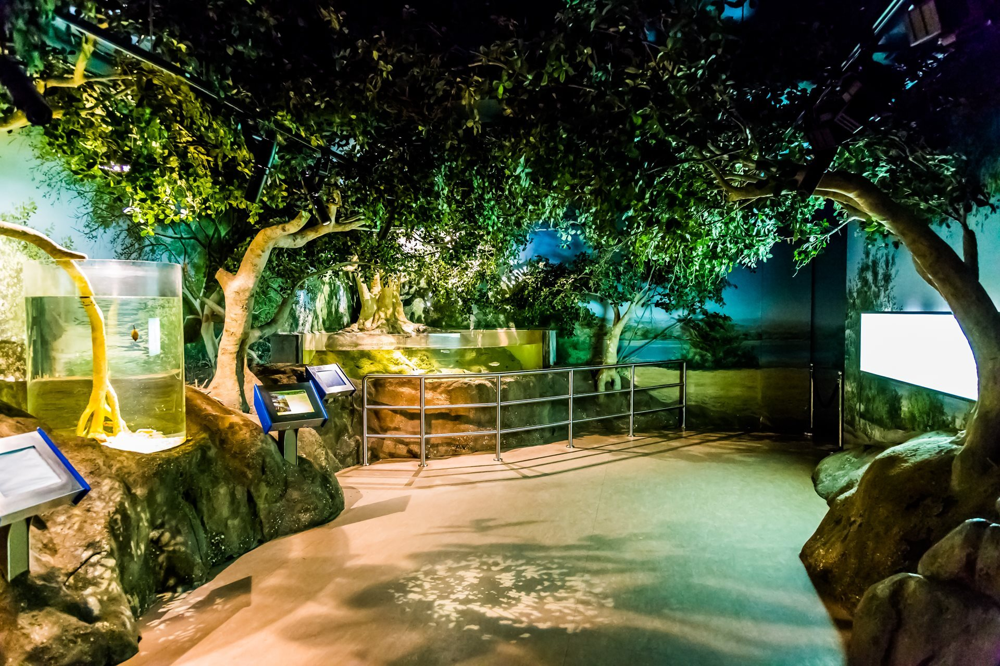

Overview
Sharjah Aquarium, which opened on June 6, 2008, offers visitors an opportunity to explore the captivating underwater world and its incredible marine life. Home to nearly 100 species, including clownfish, seahorses, moray eels, and reef sharks, the aquarium showcases the diverse marine creatures found along Sharjah's coasts. Spread across two floors and housing 21 aquariums, it covers 6500 m² and holds 1.8 million liters of water, making it the largest government-run educational marine center in the UAE. The aquarium also runs a turtle rehabilitation program, emphasizing its commitment to marine conservation and public awareness.
In addition to its exhibits, Sharjah Aquarium offers a variety of interactive activities. Families can enjoy drop-in workshops, shark feeding sessions, and main tank feedings, providing immersive experiences for children and adults alike. The interactive touch pool lets visitors engage with marine life up close, offering an educational and fun experience for everyone. Sharjah Aquarium also promotes environmental protection through its annual marine clean-up campaign, raising awareness about the importance of preserving marine ecosystems.
Photo Gallery
 

 
